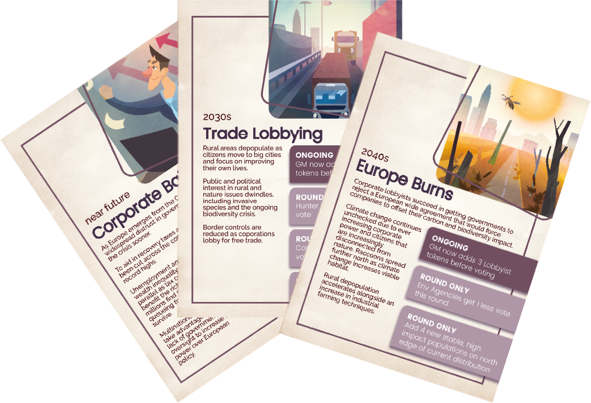
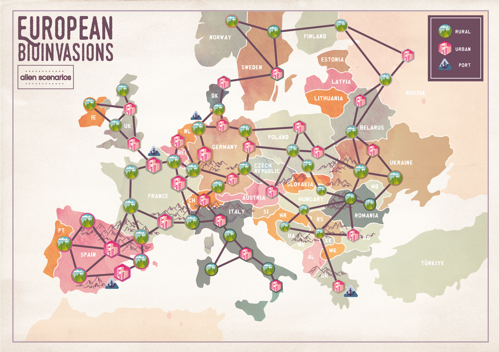

I realized it was more effective to share my votes in different initiatives rather than only my own because I get to benefit from their outcomes too.
--Participant in European BioInvasions at the 2022 Berlin workshop
I realized it was more effective to share my votes in different initiatives rather than only my own because I get to benefit from their outcomes too.
--Participant in European BioInvasions at the 2022 Berlin workshop
European BioInvasions is the first of two games developed as part of the EU-funded research projects InvasiBES and AlienScenarios. These projects explored potential futures in Europe and how they might affect our ability to manage invasive alien species, as well as their impacts on native biodiversity. The projects aimed to understand management strategies for IAS across a range of species type (plants, mammals, insects and marine).
A Role-Playing Game aimed at expert and real life stakeholders that have to deal with invasive species, European BioInvasions covers multiple species and how we might manage them in different potential European futures.
The invasion management strategies created during a successful workshop in Berlin 2022 using European BioInvasions were also used to create a public outreach boardgame about the North American Raccoon in Europe, BioInvaders! Raccoon Rampage, (find out more about that game here).
In European BioInvasions, the goal is to reduce the impact of invasive species. This is achieved by creating and passing Management Actions and adapting the approach to one of a set of scenarios that describe potential European futures.

The game is ‘coopetitive’ in nature, combining elements of collaboration and competition. It has been designed to be played by people knowledgeable in the topic of biological invasions, such as researchers, industry professionals and other stakeholders for the management of particular invasive species.
The game is run by one or two Game Masters (GMs) who guide the players through one out of a set of scenarios of plausible future circumstances in Europe (chosen by the GMs) with a focus on a particular invasive species. Each player assumes the role of a stakeholder, and jointly the players will generate new, and even innovative, strategies to manage the impact the species can cause.
European BioInvasions was a finalist in the International Educational Games Competition at the European Conference on Games Based Learning 2022 in Lisbon, Portugal.

Every round a new event card is revealed as time passes and the invasive species grow and spread. These event cards put pressure on players to adapt and work together.
Players come up with proposals of management actions on how to manage the invasive species and the impact it has.
Proposals are voted on, and successful management actions are implemented with the GM determining the effect on species spread and impact.

You can read the rules for European BioInvasions here.
All the materials needed to print and play European BioInvasions can be downloaded here.
If you have any feedback or questions about the rules we’d love to hear that feedback.
Paidia is:
This game was a collaboration between Paidia and an amazing group of Scientist Contributors including:
Wolf-Christian Saul, Freie Universität Berlin & Leibniz Institute of Freshwater Ecology and Inland Fisheries (IGB), Berlin, Germany
Sophia Kimmig, Freie Universität Berlin & Leibniz Institute of Freshwater Ecology and Inland Fisheries (IGB), Berlin, Germany
Guillaume Latombe, University of Edinburgh, UK
Bernd Lenzner, University of Vienna, Austria
Cristian Perez-Granados, Universidad de Alicante, Spain
Núria Roura-Pascual, Universitat de Girona, Catalonia, Spain
Franz Essl, University of Vienna, Austria
Leandra Heinrich, Freie Universität Berlin, Germany
Núria Puig Segura, Universitat de Girona, Catalonia, Spain
Jonathan Jeschke, Freie Universität Berlin & Leibniz Institute of Freshwater Ecology and Inland Fisheries (IGB), Berlin, Germany